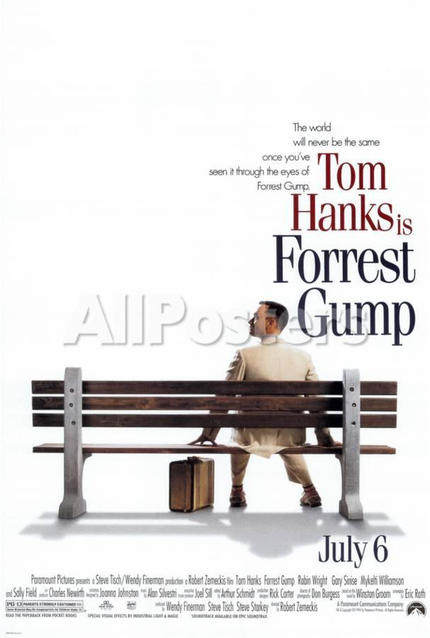

Forrest Gump

Slow-witted Forrest Gump (Tom Hanks) has never thought of himself as disadvantaged, and thanks to his supportive mother (Sally Field), he leads anything but a restricted life. Whether dominating on the gridiron as a college football star, fighting in Vietnam or captaining a shrimp boat, Forrest inspires people with his childlike optimism. But one person Forrest cares about most may be the most difficult to save -- his childhood love, the sweet but troubled Jenny (Robin Wright).